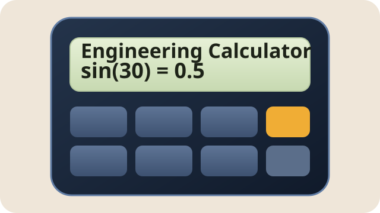
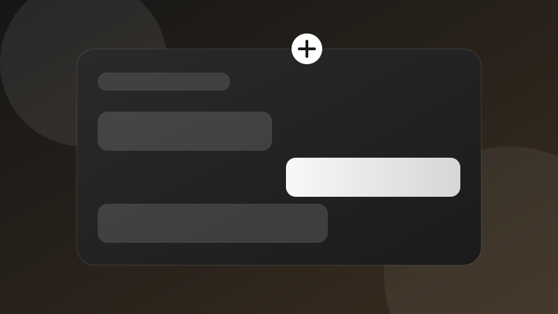
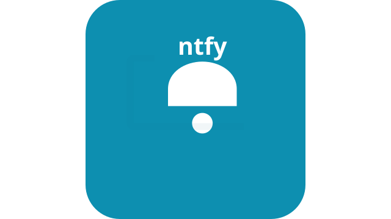

1. 打地鼠
在限定時間內快速點擊冒出的地鼠，挑戰你的反應速度與手速。
開始遊玩我喜歡把程式結合互動設計，做出簡單又有趣的小遊戲。這裡整理了我的遊戲作品，歡迎點進去體驗。
在限定時間內快速點擊冒出的地鼠，挑戰你的反應速度與手速。
開始遊玩
控制貪吃蛇吃下食物、避免碰撞，看看你能得到多高分。
開始遊玩
支援 sin、cos、tan 等函數與四則運算，三角函數採角度制。
開始使用
可輸入 Gemini API Key、問題與模型，按送出即可在視窗中查看 AI 回覆。
開始對話
單頁聊天 UI，整合 ntfy.sh 的發送與 SSE 訂閱，並提供 PowerShell 腳本與 VS Code 任務範例。
打開聊天應用簡潔的筆記編輯頁，支援本機開啟、儲存與最後修改時間顯示，方便直接記錄與回存。
打開記事本設計者王怡文製作的淡藍色選擇題測驗，總分 100 分，完成後會直接顯示成績。
開始測驗